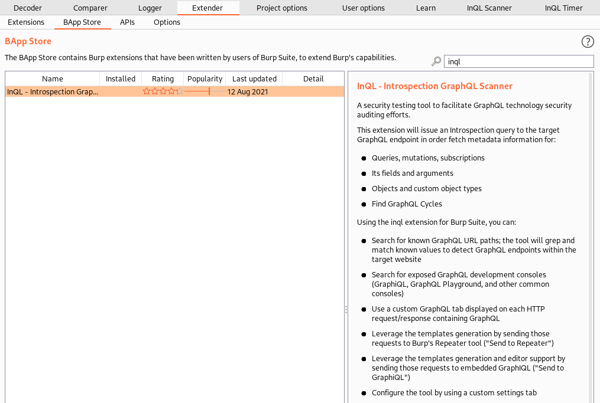
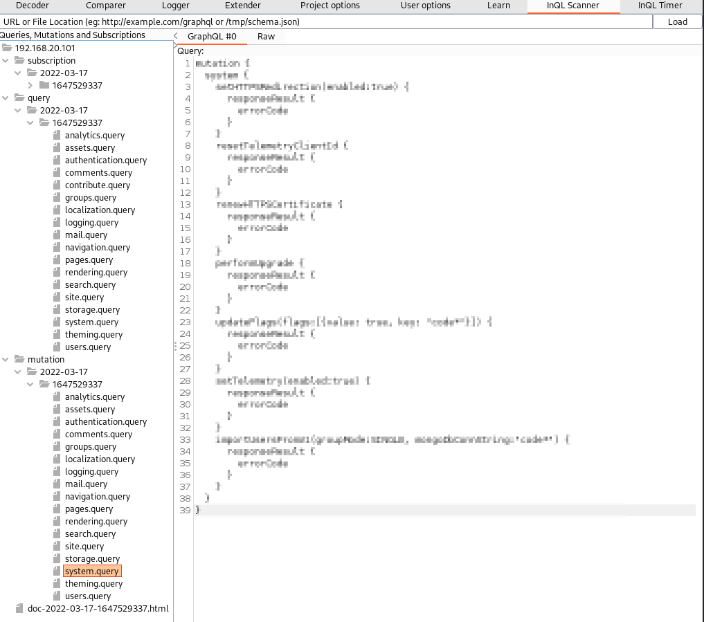
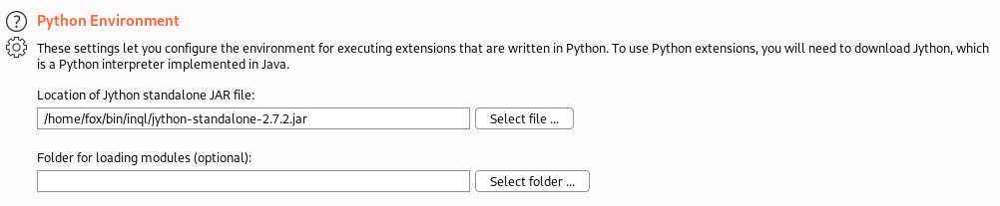
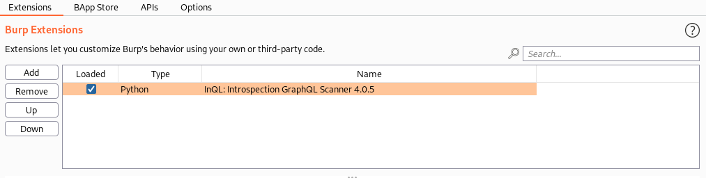
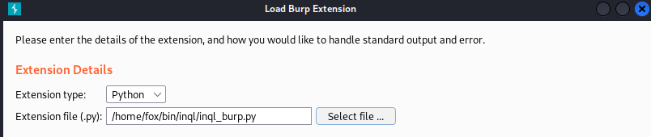

Tool: InQL Scanner Burp
InQL Scanner Burp Extension will request the schema of GraphQL and generate directly all the possible queries and mutations
We can send all the queries and mutation to Burp Repeater and send directly to the Web Server Target
Setup
To use inql in Burp Suite, import the Python extension:
• Download the latest
Jython Jar (Standalone version) → jython-standalone-2.7.2.jar
• Download the latest version of
InQL scanner → inql_burp.py
• Start Burp Suite
• Extender Tab > Options > Python Enviroment > Set the location of Jython standalone JAR
• Extender Tab > Extension > Add > Extension Type > Select Python
• Extension File > Set the location of
inql_burp.py > Next
• The output window should display the following message:
InQL Scanner Started!In the next future, we might consider integrating the extension within Burp’s BApp Store.